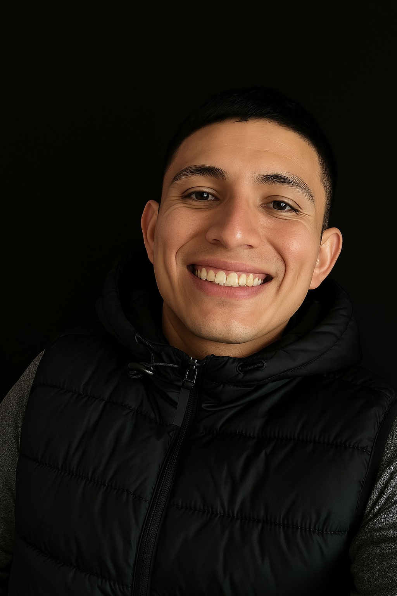

26 años | adrianjez45@icloud.com | Llamadas: 81 4076 7232 | WhatsApp: 81 2404 9690
Soy un profesional en Mercadotecnia con más de 4 años de experiencia en ventas, especializado en atención al cliente, cierre de ventas efectivas y seguimiento post-venta. Busco un puesto de ventas remoto (home office) donde pueda aplicar mis habilidades de comunicación, organización y enfoque en resultados.
Vendedor - Heineken México
Enero 2020 - Diciembre 2024
Monterrey, Nuevo León
Licenciatura en Mercadotecnia
Universidad Autónoma de Nuevo León (UANL)
Preparatoria
Preparatoria Mariano Escobedo
Español: Nativo
Inglés: Intermedio